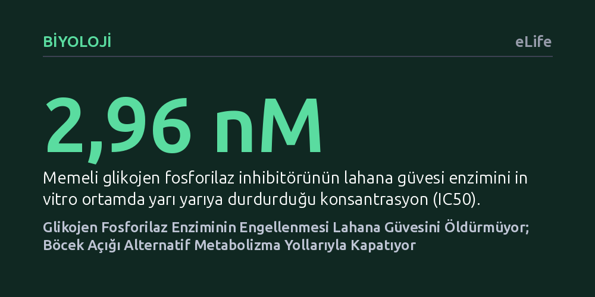

BIYOLOJI · eLife · 2026-10-16
Araştırmacılar, memelilerdeki glikojen fosforilaz inhibitörlerinin lahana güvesinde yeni bir böcek ilacı hedefi olup olamayacağını inceledi. Enzim laboratuvarda güçlü biçimde engellense de böcek glukoneogenez ve protein yıkımıyla bu kaybı telafi ederek hayatta kalmayı başardı.
Bir enzimi laboratuvarda durdurmanın tek başına yeterli bir böcek ilacı geliştirmeye yetmediğini, çünkü canlıların metabolik yedekleme ağlarıyla bu engeli aşabildiğini gösteriyor.

Tarım zararlılarıyla mücadelede en büyük güçlük, geliştirilen kimyasallara karşı böceklerin hızla direnç kazanmasıdır. Özellikle brokoli, lahana ve karnabahar gibi ürünlere dünya genelinde milyarlarca dolarlık zarar veren lahana güvesi (Plutella xylostella), pestisitlere karşı en hızlı direnç geliştiren türlerin başında gelir. Bilim insanları bu döngüyü kırmak için böceğin yaşamsal süreçlerinde kilit rol oynayan yeni enzim hedefleri aramaktadır. Bu arayışta öne çıkan adaylardan biri, depolanmış glikojeni parçalayarak hem enerji sağlayan hem de böceğin sert dış iskeletini oluşturan kitin maddesine hammadde temin eden glikojen fosforilaz (GP) enzimidir.
Memeli hayvanlardaki glikojen fosforilazı etkisiz hale getiren bazı kimyasal bileşikler, tarımda yaygın kullanılan böcek öldürücülerle yapısal benzerlik gösterir. Bu durum araştırmacıların aklına mantıklı bir soru getirdi: Eğer memelilerdeki bu enzimi durduran güçlü inhibitörler lahana güvesinin enzimine de bağlanabiliyorsa, bu enzimi tek başına felç ederek böceği öldürecek yepyeni bir tarım ilacı tasarlanabilir miydi? Sorunun cevabı, hedef odaklı ilaç geliştirme mantığının böcek biyolojisindeki sınırlarını test etmek açısından büyük önem taşıyordu.
Araştırma ekibi ilk olarak lahana güvesinin glikojen fosforilaz enzimini laboratuvar ortamında rekombinant yöntemle üretti ve memeli inhibitörünün bu enzim üzerindeki etkisini ölçtü. Sonuçlar kağıt üzerinde kusursuzdu; inhibitör molekül, sadece 2,96 nanomolar gibi son derece düşük bir derişimde bile güve enzimini yarı yarıya engellemeyi başardı. Bilgisayarlı moleküler kenetlenme simülasyonları da ilacın enzimin aktif merkezindeki amino asit yan zincirlerine ne denli güçlü kenetlendiğini doğruladı. Buna karşılık, piyasada yaygın kullanılan diflubenzuron adlı klasik böcek ilacının bu enzimi doğrudan durdurmadığı anlaşıldı.
Ancak biyolojide test tüpünde elde edilen başarı, her zaman canlı bir organizmada aynı sonucu vermez. Araştırmacılar laboratuvarda enzimi dize getiren bu güçlü inhibitörü canlı lahana güvesi larvalarına uyguladıklarında şaşırtıcı bir tabloyla karşılaştı: İlaç böceklerde hiçbir öldürücü etki göstermedi. Şüpheleri gidermek için ek olarak genetik susturma yoluna gidildi; RNA interferans (RNAi) yöntemiyle enzimi kodlayan gen baskılandı ve aktif enzim miktarı yaklaşık yüzde 29 oranında azaltıldı. Buna rağmen larvalar gelişimlerini başarıyla sürdürdü.
Enzimi durdurulan bir zararlının nasıl olup da hiçbir şey olmamış gibi hayatına devam ettiği sorusunu yanıtlamak için böceğin iç metabolizması incelendi. Gen susturulduğunda larvalarda ilk başta geçici bir ağırlık kaybı yaşanıyordu; ancak böcekler pupa (koza) evresine ulaştıklarında bu kaybı tamamen telafi ediyor, sağlıklı erginlere dönüşüyor ve normal sayıda yumurta bırakıyordu. Hücresel düzeydeki biyokimyasal analizler, böceğin dayanıklılık sırrını açığa çıkardı: Glikojen parçalanamadığında, organizma glukoneogenez adı verilen alternatif bir metabolik yolu devreye sokuyordu.
Böcek, depolanmış glikoz yerine vücudundaki proteinleri yıkarak amino asitleri serbest bırakıyor; PEPCK ve G-6-Pase gibi kilit glukoneogenik enzimleri aşırı düzeyde çalıştırarak ihtiyaç duyduğu şekeri sıfırdan üretiyordu. Bir başka deyişle, lahana güvesi ana enerji kapısı kapandığında paniklemek yerine yan kapıları ardına kadar açıyor ve metabolik esnekliği sayesinde hedef alınan enzimi tamamen önemsiz kılıyordu. Bu bulgu, enzimin tek başına vazgeçilmez bir ölüm kalım hedefi olmadığını deneysel olarak kanıtladı.
Bu çalışmanın ortaya koyduğu en kritik ders, canlıların karmaşık metabolik ağlarının basit doğrusal hatlardan ibaret olmadığıdır. Modern ilaç ve pestisit tasarımında sıklıkla tek bir enzime kilitlenilir ve onu laboratuvarda durdurmanın organizmayı çökerteceği varsayılır. Oysa yüz milyonlarca yıllık evrimsel baskı altında hayatta kalan böcekler, hayati süreçlerini birden fazla yedekli sistemle garanti altına almıştır. Bir yol tıkandığında diğer yolların hızla devreye girmesi, biyolojik dayanıklılığın temelini oluşturur.
Sonuç olarak, lahana güvesinde glikojen fosforilazı tek başına hedefleyen bir böcek ilacı geliştirmek tarla koşullarında beklenen çözümü sunmayacaktır. Gelecekte başarılı pestisitler tasarlamak isteyen araştırmacıların, yalnızca tek bir enzime odaklanmak yerine, glukoneogenez gibi telafi edici yedek yolları da hesaba katan çoklu hedef stratejilerine yönelmesi gerekecektir.